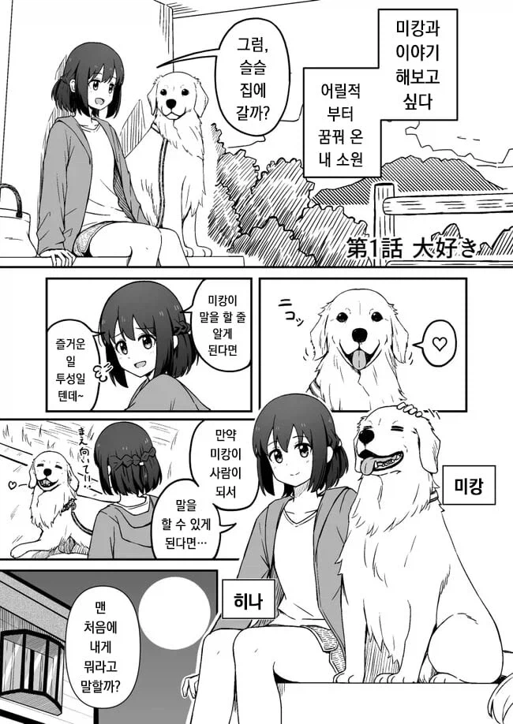
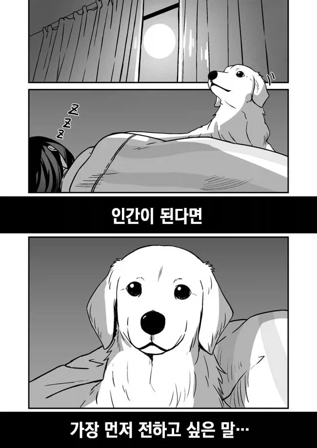
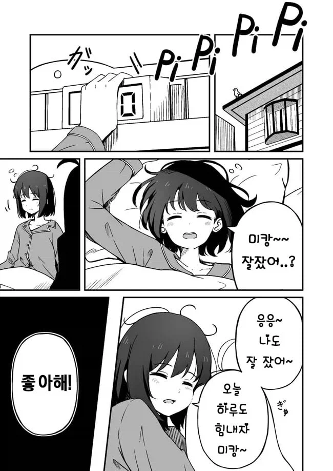
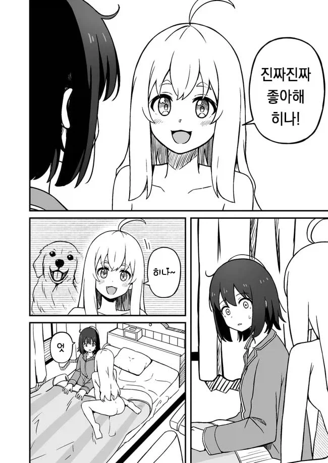
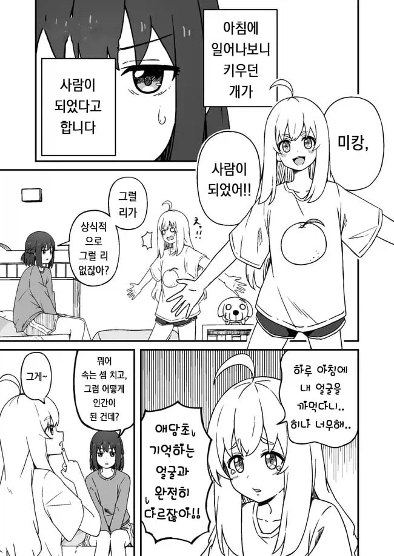
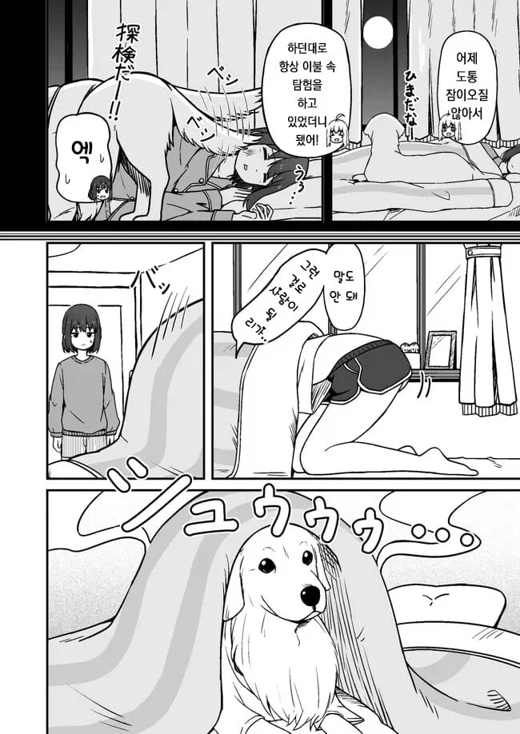
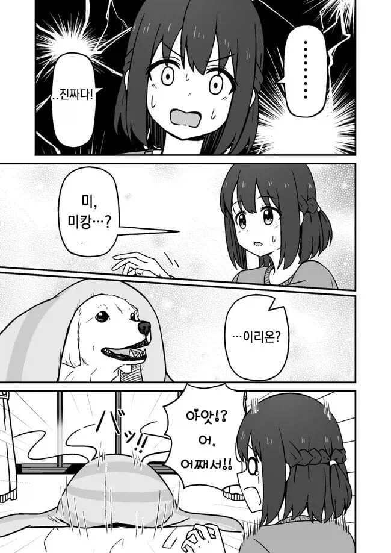
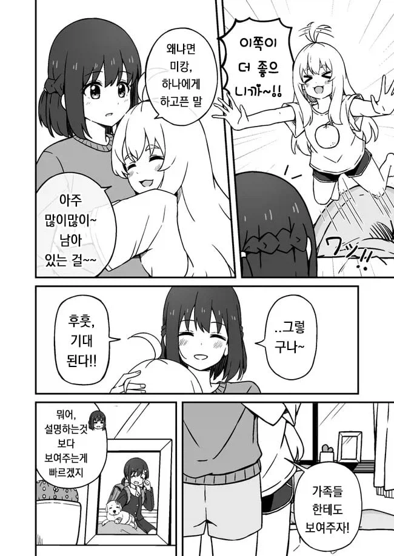
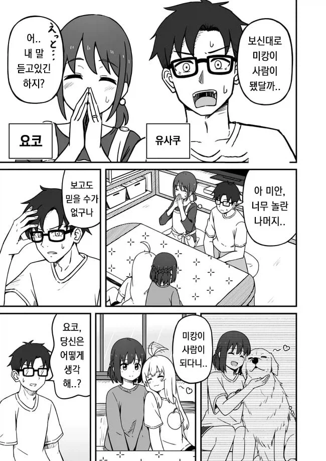
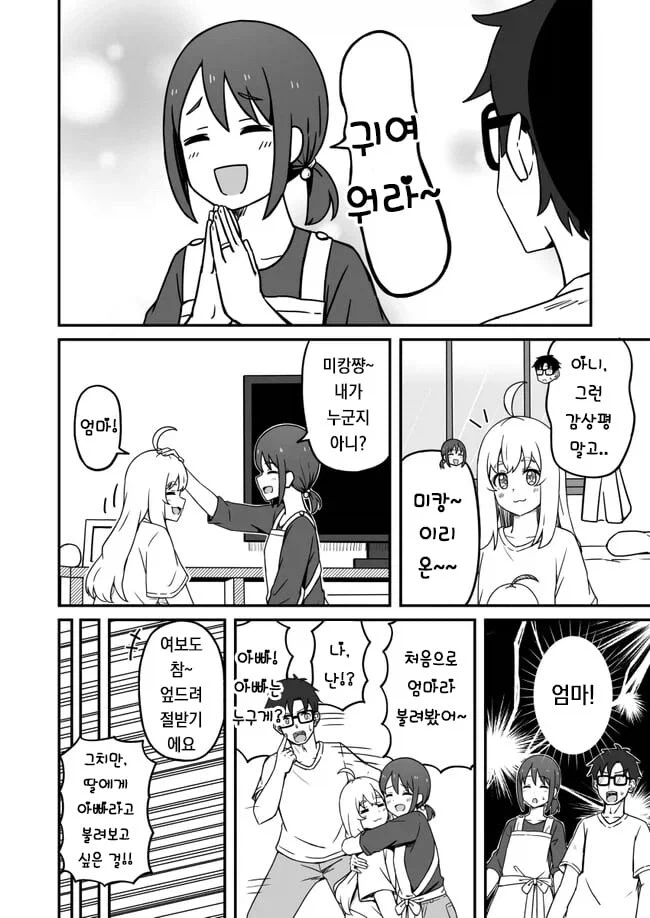
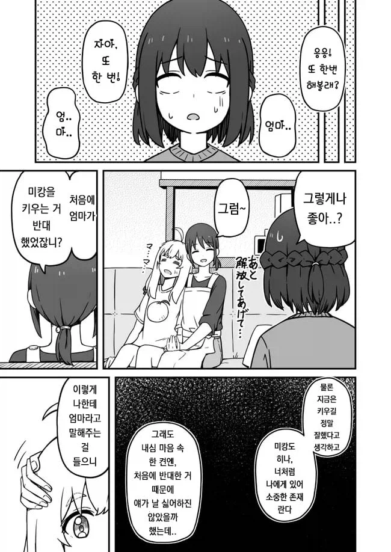
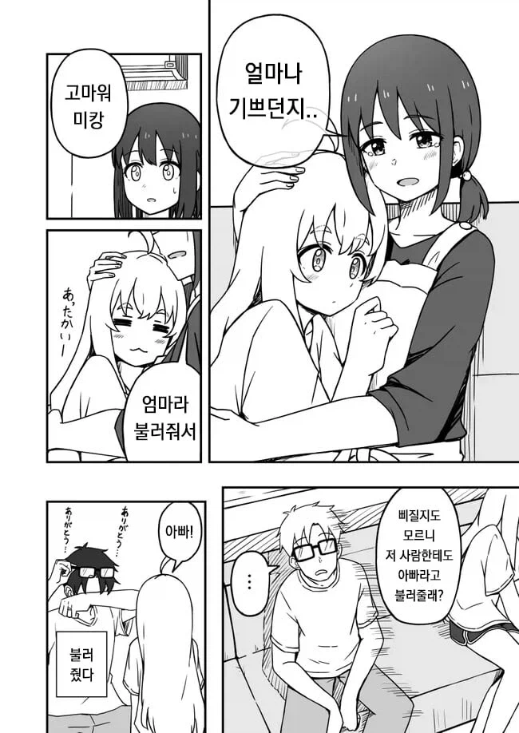
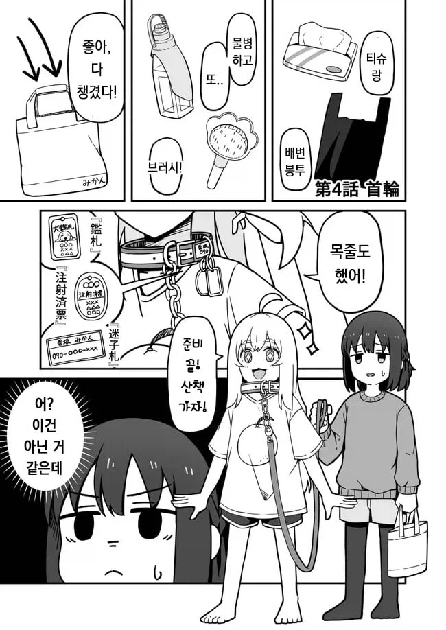
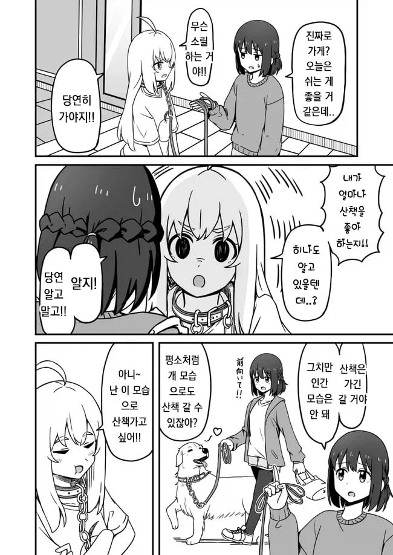
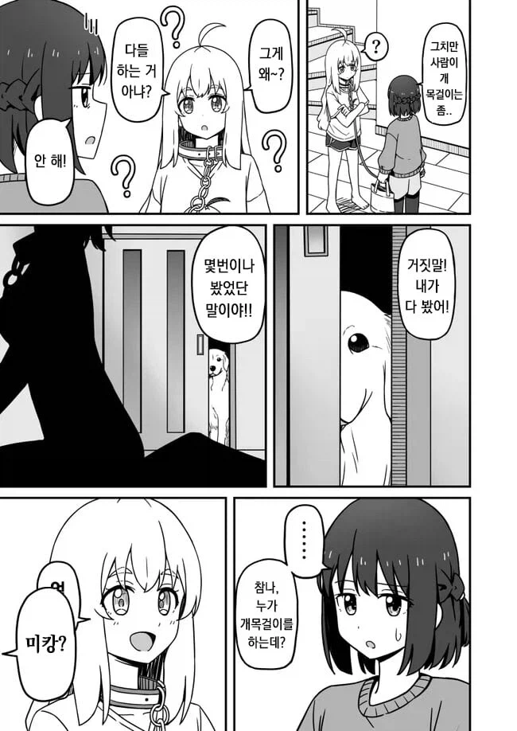
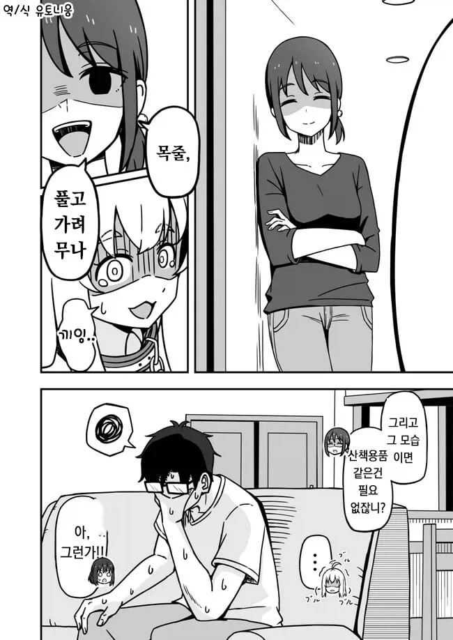
















댓글
수집 당시 댓글 24개
있음 · 10 시간 전
그웬스테이시 · 10 시간 전
밀크쉐이크비빔밥 · 10 시간 전
불로동보안관 · 10 시간 전
캐피탈리즘호2 · 10 시간 전
미캉 이불속에 숨어있을때 박으면, 관측하기 전까진 사람인지 개인지 모르니까 양자역학의 뷰지인가
· 익명
· 좋았쓰냥이 · 2 시간 전
그리고 박기직전까지는 개뷰지일수도있고 휴먼뷰지일수도있어서 슈뢰딩거의 뷰지임
· 좋은말좋은생각좋은행동 · 7 시간 전
그런가..개로 보이는가...
크아아악! 고추가 빠져!!!!!
· 흰색고양이 · 6 시간 전
너처럼 눈치빠른 개붕이는...
· Vv연옥의사신vV · 6 시간 전
· 신암동할매집 · 5 시간 전
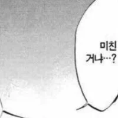
· 페페콘만씀 · 4 시간 전
· 맛있는고구마 · 3 시간 전
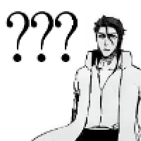
최고의맥주부드바르 · 7 시간 전
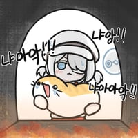
아니뭐해 · 6 시간 전
미캉이 귤이란 뜻이었나
어휴극혐 · 6 시간 전
또르표 · 6 시간 전
중성화 했을거아니야
재수생인데개드립함 · 6 시간 전
유아학교 · 6 시간 전
낑낑
알빠메일 · 5 시간 전
"아앗 히나 나 똥!" 산책중 쁘직
악덕팬더 · 4 시간 전
아쎄이 · 4 시간 전
..임신가능...??
악력왕랄프 · 3 시간 전
Hitomi · 2 시간 전
아 그런취향?